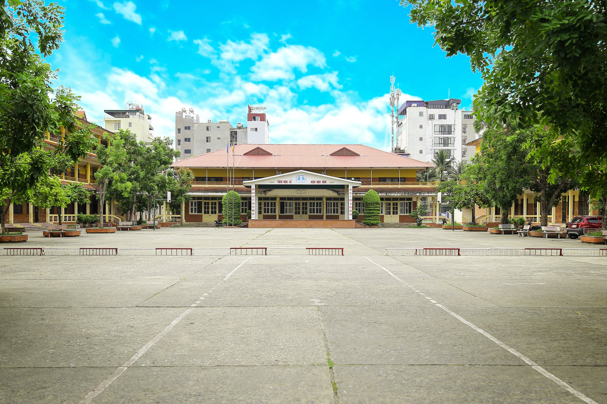

Hermann Gmeiner- công dân nước Cộng hoà Áo, sinh ngày 23 tháng 6 năm 1919 trong một gia đình nông dân đông con tại ngôi làng Alberschwende, tỉnh Vorarlberg, Cộng hoà Áo. Mẹ mất khi còn nhỏ tuổi và chị gái của ông đóng vai trò quan trọng trong việc thay thế mẹ chăm sóc các em.
Năm 1940, Hermann Gmeiner tham gia trong quân đội và từng phục vụ tại Phần Lan, Nga và Hungary. Đến năm 1945 ông rời quân đội với nhiều vết thương và bắt đầu học ngành y tại trường Đại học Innsbruck miền tây nước Áo. Tại đây ông chứng kiến nhiều trẻ em mồ côi, trẻ em bị lạc cha mẹ phải lang thang ăn xin trên đường phố, tối ngủ dưới gầm cầu, vỉa hè. Trước thực trạng đó, Hermann Gmeiner đã mang ý định mong muốn cứu giúp trẻ em mồ côi thảo luận với bạn bè và đã được bạn bè ủng hộ.
Năm 1949, trong điều kiện chỉ có 600 Schillings (tiền Áo tương đương với khoảng 40 USD) dành dụm được Hermann Gmeiner đã kêu gọi và được bạn bè ủng hộ thành lập “Societas Socialis asociation” (Tiếng Đức, tạm dịch là Hội Cộng đồng Xã hội) đồng thời tuyên truyền, kêu gọi sự đóng góp của bạn bè và cộng đồng thông qua đó Hermann Gmeiner đã tìm được một mảnh đất phù hợp cho việc xây dựng. Nhờ có sự hợp sức của bạn bè ngôi nhà đầu tiên đã được xây dựng tại Imst, tỉnh Tyrol miền tây nước Áo và đặt tên ngôi nhà là “Haus Frieden” (Nhà Hoà Bình-tiếng Áo). Số tiền mọi người đóng góp đến đâu nhà được xây đến đó và dần dần sau này thành ngôi làng Imst đầu tiên trên thế giới. Đến 1950, Hội được đổi tên thành SOS Kinderdorf (SOS Làng trẻ em-tiếng Áo). Công việc giúp trẻ mồ côi đã cuốn hút Hermann Gmeiner một cách mạnh mẽ đến mức ông không thể tiếp tục hoàn thành chương trình học ngành y. Hermann Gmeiner hiểu rằng muốn chăm sóc trẻ mồ côi một cách toàn diện, ổn định lâu dài chỉ có được khi trẻ được sống trong mái ấm gia đình có bàn tay chăm sóc của người mẹ. Do đó ông đã đề ra mô hình nuôi dưỡng trẻ mồ côi dựa trên nền tảng gia đình với 4 nguyên tác sư phạm là Bà mẹ, Anh-chị-em, Ngôi nhà và Cộng đồng Làng. Đến nay, Làng trẻ em SOS đã phát triển và có mặt tại 134 quốc gia và vùng lãnh thổ trên toàn Thế giới.
Hermann Gmeiner được phong Tiến sĩ danh dự của hai trường đại học và Viện sĩ Viện Hàn lâm khoa học Áo. Ông cũng được nhiều nước trên Thế giới tặng phần thưởng cao quý và các danh hiệu vinh dự. Hermann Gmeiner mất ngày 26 tháng 4 năm 1986 tại Áo hưởng thọ 67 tuổi.
Trường Phổ thông Hermann Gmeiner Hải phòng được thành lập ngày 21 tháng 03 năm 2000, là trường phổ thông có nhiều cấp học duy nhất của thành phố Hải Phòng (trong đó cấp tiểu học có 15 lớp, cấp THCS có 8 lớp và cấp THPT có 9 lớp). Trường được đặt tại phường Đằng Giang -Quận Ngô Quyền- thành phố Hải phong ( Nay thuộc Phường Đông hải 1- Quận Hải An- Hải phòng). Trường được công nhận là trường đạt chuẩn cấp Quốc gia. Trong quá trình xây dựng và trưởng thành nhà trường luôn là niềm tự hào của các thế hệ cán bộ giáo viên và học sinh đã, đang công tác, học tập tại trường.
Nhà trường là đơn vị có truyền thống “ Dạy tốt – Học tốt”, tập thể cán bộ, giáo viên nhà trường luôn đoàn kết, tâm huyết, nhiều người có trình độ chuyên môn vững vàng; giáo viên nhà trường có nhiều kinh nghiệm trong bồi dưỡng học sinh giỏi, nâng trình độ học sinh học yếu.
Hiện nay nhà trường có 85 cán bộ giáo viên, nhân viên, trong đó có 2 cán bộ quản lý, 65 giáo viên và 18 nhân viên; 100% giáo viên đạt chuẩn, trong đó: 19,5% CBGV có trình độ thạc sĩ; 02 người có trình độ trung cấp chính trị; 02 người có chứng chỉ quản lý giáo dục; trên 40% là giáo viên dạy giỏi cấp thành phố, chiến sĩ thi đua thi đua cấp cơ sở và cấp thành phố. 100% CBQL, GV sử dụng thành thạo máy tính và các phần mềm ứng dụng phục vụ công tác quản lý và giảng dạy.
Đối với cấp THPT nhà trường thực hiện giảng dạy theo chương trình chuẩn; bố trí đội ngũ giáo viên bộ môn, giáo viên làm công tác chủ nhiệm lớp phù hợp với đặc điểm từng lớp và đối tượng học sinh để học sinh có điều kiện học tập, rèn luyện đạt kết quả cao trong nhà trường; thực hiện thường xuyên công tác bồi dưỡng học sinh giỏi, học sinh yếu, học sinh trước khi thi tốt nghiệp; tổ chức nhiều hoạt động trải nghiệm, nghiên cứu khoa học, quan tâm việc dạy và định hướng nghề cho học sinh lớp 11,12.
Hoạt động ngoại khóa kết hợp với Đoàn thanh niên và Đội TNTP tổ chức nhiều phong trào hoạt động với nội dung, hình thức phong phú, có tính giáo dục, tính cộng đồng cao; thường xuyên tổ chức các phong trào đua học tập, rèn luyện trong các tập thể học sinh, quan tâm tổ chức các hoạt động sinh hoạt tập thể vui tươi, bổ ích, chú trọng giáo dục truyền thống, đạo đức và kỹ năng sống cho học sinh.
Quan tâm thực hiện tốt công tác xã hội hóa giáo dục, tổ chức nhiều hoạt động nhân đạo từ thiện trong và ngoài nhà trường; xây dựng quỹ khuyến học khuyến tài nhằm giúp đở học sinh có hoàn cảnh khó khăn.
Kết quả học tập và rèn luyện của học sinh: hàng năm nhà trường đều có học sinh tham gia thi và đạt giải học sinh giỏi cấp Quận và thành phố bộ môn văn hóa và TDTT, Mỹ thuật, âm nhạc. Trong nhiều năm học gần đây nhà trường luôn đạt kết quả cao về chất lượng đại trà hai mặt giáo dục; tỷ lệ học sinh đỗ tốt nghiệp, học sinh giỏi, học sinh đỗ cao vào các trường đại học, cao đẳng. Học sinh khối 9 thi vào lớp 10 công lập đạt kết quả cao, năm học 2018-2019 xếp thứ 2 trong toàn thành phố.
Trường luôn có nhiều đổi mới, có giải pháp phù hợp và có hiệu quả trong việc triển khai các kế hoạch,chủ trương của Ngành và của tỉnh, đặc biệt trong quy hoạch nhà trường, xâydựng và giữ gìn môi trường sư phạm xanh - sạch - đẹp - an toàn.
Về cơ sở vật chất phục vụ dạy học: Trường có cơ sở vật chất tương đối đầy đủ, khuôn viên sạch đẹp, khang trang. Tổ chức dạy và học 2 buổi/ngày cho học sinh và có tổ chức bán trú với khu bán trú riêng biệt, phòng ngủ trang bị máy điều hoà, có bếp ăn, nhà ăn riêng đạt tiêu chuẩn về chất lượng vệ sinh an toàn thực phẩm. Hiện nhà trường có 27 phòng học chuẩn, mỗi phòng học đều có trang bị 01 tivi; có đủ máy chiếu; 02 phòng học Tin với 40 máy nối mạng LAN và Internet tốc độ cao; 03 phòng thí nghiệm, 01 vườn thực hành, 01 phòng thư viện 3.500 đầu sách với trên 10.000 bản; Nhà đa năng để hoạt động ngoại khóa và học môn thể dục khi cần thiết. 01phòng truyền thống ; 01 sân khấu ngoài trời rộng rãi, có 01 trang web có số lượng người truy cập cao; có hệ thống camera quan sát, hệ thống âm thanh ngoài trời; toàn bộ các phòng học, phòng chức năng của học sinh và khuôn viên nhà trường đều được chiếu sáng bởi hệ thống ánh sáng chuẩn; cây cảnh, cây bóng mát, ghế nghỉ, bảng tin… đáp ứng tốt cho tổ chức dạy và học, tổ chức các hoạt động sinh hoạt tập thể của thầy và trò nhà trường.
Bằng sự đoàn kết, nỗ lực không ngừng nghỉ của các thế hệ thầy và trò nhà trường, đến nay nhà trường đã vinh dự được Chính phủ tặng thưởng 01 Bằng khen; Trường đạt chuẩn quốc gia năm 2005-2010. Nhà trường là địa chỉ tin cậy của các thế hệ học sinh và các bậc cha mẹ học sinh an tâm gửi con vào học tập.Hiện nay, Thầy và Trò nhà trường quyết tâm tiếp tục phấn đấu xây dựng nhà trường trở thành một tập thể đoàn kết, thống nhất, đạt chất lượng cao về mọi mặt, đưa nhà trường thực sự là một điểm sáng về giáo dục đào tạo của địa phương và của thành phố.